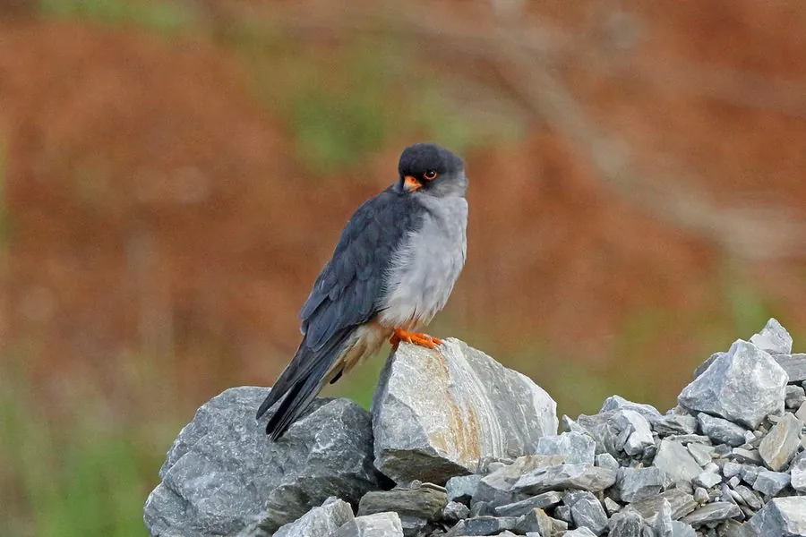

鸟类 · 动物界
红脚隼 Falco amurensis

体型小巧的候鸟隼类，雄鸟石板灰而“裤腿”栗红，雌鸟满布横斑。每年往返东亚与非洲南部，是迁徙路程最长的猛禽之一。
- 分类
- 门脊索动物门纲鸟纲目隼形目科隼科属隼属
- 栖息环境
- 草原、湿地边缘、农田、河谷疏林与村庄附近，迁徙时也出现在开阔的海岸与岛屿。
- 地理分布
- 繁殖于中国东北、华北及俄罗斯远东、蒙古；越冬于非洲南部，迁徙途经南亚与阿拉伯海。
- 保护级别
- IUCN 红色名录列为无危（LC）；中国国家二级保护野生动物，列入 CITES 附录二。
物种志
红脚隼体长约二十八至三十一厘米，翼展六十三至七十一厘米，体重一百至一百六十克，是体型较小的隼类。雄鸟通体石板灰，飞羽近黑，尾下覆羽与跗跖周围呈鲜明的栗红色，形成标志性的“红裤腿”；雌鸟上体灰褐，下体乳白并密布褐色横斑，脸侧有明显髭纹。虹膜暗褐，嘴灰黑，脚橙红色。
它繁殖于东亚草原、湿地边缘与农田疏林，常占用喜鹊旧巢或树洞，每窝产卵三至五枚。食谱以蝗虫、蜻蜓等昆虫为主，也捕食小型鸟类和鼠类，傍晚常成群在空中捕虫。最引人注目的是其迁徙路线：秋季从中国东北、华北出发，经印度、阿拉伯海飞越印度洋抵达非洲南部越冬，春季再原路返回，单程可达一万余公里，越冬地曾记录到数万只集群。
形态与习性
- 体长28–31 厘米
- 翼展63–71 厘米
- 体重100–160 克
- 食性蝗虫、蜻蜓等昆虫，兼食小鸟
- 迁徙东亚繁殖，非洲南部越冬，跨印度洋
- 保护级别国家二级；CITES 附录二
趣味知识
- 雄鸟栗红色的尾下覆羽像一条醒目的“红裤子”。
- 秋季会跨越阿拉伯海，连续飞行数千公里不落地。
- 常成群在黄昏空中捕食昆虫，飞行轻快如燕。